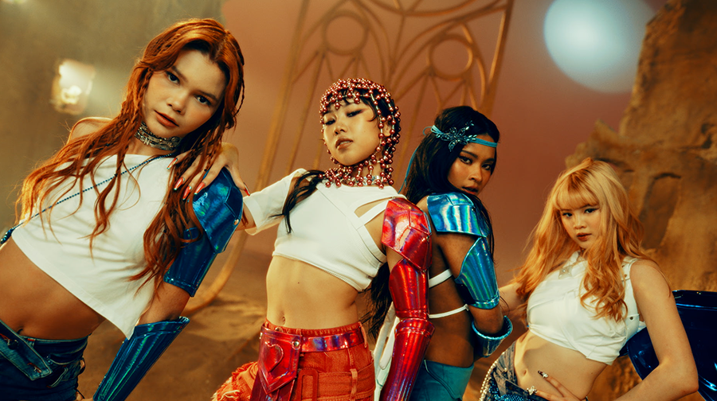
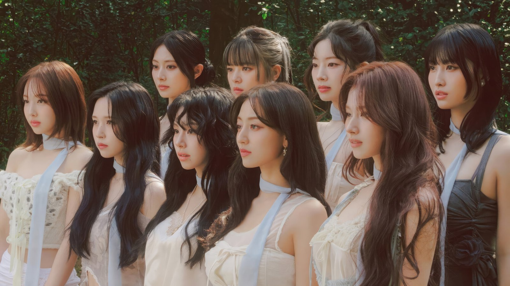
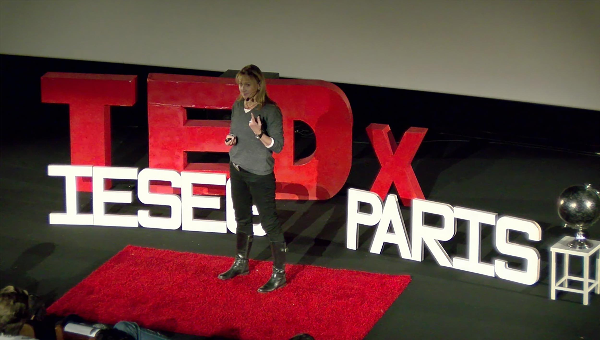

I'm a 17 years old student at IESEG School Of Management. Currently, I'm pursue the first year of the Programme Grande Ecole in Paris 🇫🇷. Also, I'm an artist in the international girlgroup STARSEED'Z 🌟.
STARSEED’Z (also known as SSZ) is a 4 member international K-pop girl group under the French entertainment company, Seedbox Entertainment. We work with many producers, realisators, songwritters, choreographers,... around the world (French, American, Thaï, Korean, Italian,...). We participated at various event around France like Paris Manga, Japan Expo Marseille, Vannes Sekaï Festival,...
My favourite type of music is KPOP, it's Korean pop. I discovered this when we were confined during the Covid-19 period. My sister showed me some videos of BLACKPINK, the biggest kpop girlgroup of the world. And my favourite group is TWICE. I'm a big fan of them.
I'm a member of the association TEDxIESEGParis in my school. I work for the event division. This year 2025, we will organize our at "Le Grand Rex", in Paris. I hope you’ll be there!
